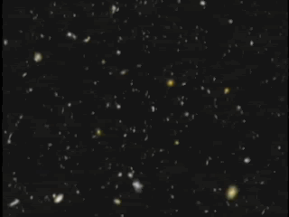
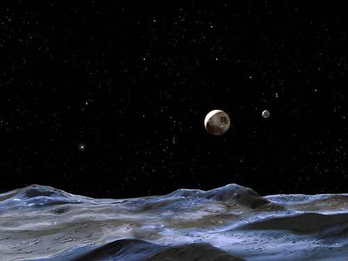
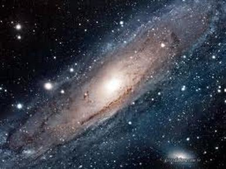
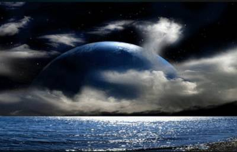
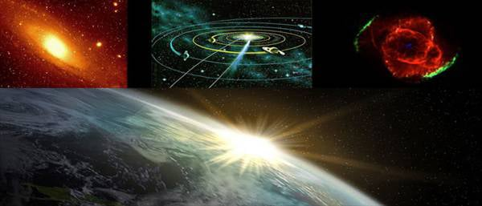
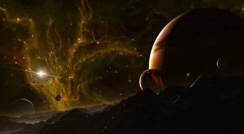

Preporuka za ovaj jedinstveni uređaj za zaštitu od tehničkih i drugih zračenja.
(Uređaj preporučuje i Spasoje Vlajić)

Svemir,za neke ljude večna inspiracija a za većinu to nije ništa,to je praznina o kojoj nikada ni ne razmišljaju.Koliko često gledate u zvezde? Verovatno jako retko ili nikad.E toliko ste i blizu Bogu,sami procenite.Tesla je inače isključivo radio noću pod uticajem zvezda a ne sunca jer je govorio da je lakše se sinhronizovati i primiti informacije iz tog nevidljivog sveta.Mislite da je bio lud? Razmislite još jednom.
Neke osnovne stvari koje treba da znate su da je naša Galaksija zvana Mlečni Put veličine prečnika 100.000 svetlosnih godina,a do susedne Galaksije Andromede ima 2.500.000 svetlosnih godina. Znači to je vreme koje je potrebno da svetlosnom brzinom pređete ta rastojanja.Do najbliže planete van našeg sunčevog sistema ima oko 2. svetlosne godine u ovom momentu kada pišem ovo.S obzirom da je ono što mi možemo da vidimo u svemiru samo 5% i pomoću najsavremenijih teleskopa onda možete zamisliti tek koliko je stvarno velik.Ono što ne vidimo su više dimenzije postojanja, paralelni svetovi,i neke druge realnosti za koje još nismo dorasli da možemo da ih vidimo a neke nisu ni predviđene da budu vidljive.Verovatno mislite pa kada je sve toliko veliko i daleko šta uopšte da razmišljam o tome.Da pa tako su vas učili i školovali i naravno po običaju lagali.Ono što sam prethodno opisao je to kako mi vidimo i doživljavamo svemir ali je sve zapravo mnogo drugačije.Te razdaljine mogu da se savlađuju mnogo lakše nego što možete i zamisliti ali o tome čitajte u rubrici vanzemaljci. Ova materija je dosta kompleksna i beskonačna baš kao i svemir pa ću ja pojednostaviti i objašnjavati sve iz našeg ugla shvatanja(šta vredi da vam pričam nešto što ne biste razumeli).Šta vredi da vam kažem da je sve samo jedan hologram i da je veličine jedne sobe i da vas zbunjujem.Zato idemo polako,prvo nismo sami u svemiru to mora da shvatite jer ako ipak sumnjate u tu tezu preskočite ovu oblast.

Svemir uopšte nije tako prazan kao što se misli,ima osnovne elemente života u svakom delu i gde god postoje iole uslovi za razvoj života razvije se život,a sve je pod kontrolom viših sila,vanzemaljaca,Anđela i samog Boga.Pošto bi takav spontan proces razvoja života bio dosta spor onda tu stupaju na scenu ono što mi zovemo vanzemaljci i ubrzavaju taj nastanak života i njegov dalji razvoj.Tako je bilo i na našoj planeti.Postoje planete gde se život i spontano razvio u dugom procesu ali u većini slučajeva je ovako.Ja vam sada neću prepričavati čitavu istoriju tih događaja jer priči ne bi bilo kraja.

Rećiću samo da je pre naše civilizacije na zemlji bilo još najmanje 3 poznate koje su došle do nivoa do kog smo i mi danas,ali su iz mnogobrojnih razloga i grešaka nestali.Poslednja je bila Atlantida za nju ste verovatno čuli i mnogi od nas danas su u srodstvu sa Atlantiđanima na ovaj ili onaj način.I mi smo danas upravo na kraju jednog ciklusa,ostalo je još vrlo malo vremena pa ćemo videti ko ide dalje,a ko ostaje da se dalje krčka sa ovim negativnim silama u 3d svetu i ponavljanju razreda kroz reinkarnacije. Postoje mnogobojna neslaganja oko toga kako je tačno Svemir nastao.Kada biste pitali više sile oni bi vam odgovorili da je postojao oduvek i da će uvek postojati.To je ustvari prava istina iako neshvatljiva za ljude,jer se odmah postavlja pitanje a šta je bilo pre? Kako oduvek? Za ljudski um neshvatljivo.Zato što vreme i prostor uglavnom i ne postoje.To je samo naš doživljaj jer nam je matrica tako programirana.Recimo kada biste živeli beskonačno kao što mnogi žive na višim nivoima postojanja onda bi vam bilo jasnije.Sada da ipak objasnim kako je nastao ovaj poslednji naš materijalni svemir.Svemir je u stalnim procesima skupljanja i širenja i evolucije,i kada se nađe ponovo na početku stvaranja a to se sa ovim našim desilo pre oko 20 milijardi godina,preispitaju se prvobitno sva iskustva prethodnog u samom bogu jezgru i odlučuje se kakav će biti novi.I svemir vremenom evoluira i mnoga bića imaju nove želje kako bi trebalo sve da izgleda(mada sve mora biti u okviru određenih pravila igre).Znači poenta je da i u toj međufazi nije ništa nestalo,nego samo nije materijalno i vidljivo okom ali i dalje postoji.Znači život je večan samo pitanje na kojim nivoima postojanja.Osim naše dimenzije koju mi vidimo golim okom postoji beskonačno paralelnih svetova i dimenzija.

U svim tim svetovima postoje različiti oblici života i postojanja.To ni u najluđoj mašti ne možete da zamislite.I naši životi isto tako mogu istovremeno da postoje na različitim nivoima postojanja i različitim paralelnim svetovima jer vreme zapravo ne postoji i isprobavaju se mnogobrojne kombinacije našeg života.O ovome će biti više u drugim rubrikama.Svemir je inače Bog tako rasporedio namerno,odnosno velike razdaljine nisu slučajne.Morate da dođete na određeni stepen razvoja da bi ste mogli da ih savladate.Mi smo sada u onoj početnoj najnižoj fazi za ljude tzv. 3d realnosti postojanja gde se eto borimo sa demonima i lažnim matriksom i da nekako pređemo na viši nivo(ali opet kako ko,nekome ovo baš odgovara).Što se tiče našeg sunčevog sistema,život postoji praktično na svim planetama u nekom obliku.Na Mesecu postoje uslovi za život oko polova posebno,bilo je čak i na vestima da su vodu pronašli ali to je samo deo priče.Rusi I Amerikanci su već 50-ih godina prošlog veka bili na mesecu letećim tanjirima koje su napravili.A vrlo brzo su napravili i baze tamo,do kraja 50-ih sve je već bilo gotovo.Posebno je interesantna tamna strana Meseca gde život vanzemaljskog porekla posebno buja.Ima neverovatnih građevina,neke su vidljive neke ne.Neke su u višim dimenzijama.Oni naravno i brinu o Zemlji u smislu da ne bi pao neki meteor ili nešto slično jer od toga niko nema koristi,osim da plaše ljude u filmovima.Ljudi tamo imaju i neke zajedničke baze sa njima.
Mars je posebno interesantan,ima vodu,vegetaciju,život raznog oblika.Rusko Američki zajednički projekat sletanja na Mars sa ljudskom posadom se desio 1962.godine i do kraja 60-ih su imali prve baze tamo.Tako da osim naseobina na površini Marsa postoje i originalni Marsovci koji su se u manjem broju zadržali ispod površine nakon katastrofe koja ih je zadesila u prošlosti.

Ima i zajedničkih baza sa vanzemaljcima.Na marsu postoji jedna napredna civilizacija danas ispod površine planete ali i na višim dimenzijama postojanja.Postoje na površini brojne piramide i pravi gradovi piramida,ostaci bivše civilizacije koje je u jednom trenutku zbog različitih razloga prešla delom i na zemlju.Sada žive negde ispod planina u srednjoj Americi.Nema ih puno i malo su napredniji od nas.Tako da Marsovci postoje,to nisu neke bajke.Ali su bezazleni za ljude.S obzirom na naprednu tehnologiju koju su Rusi i Amerikanci dobili od vanzemaljaca,mogu da putuju po čitavom svemiru.Na Veneri u 3d realnosti se nalaze oni negativni vanzemaljci i ljudi tamo nisu dobrodošli i sumnjam da je od ljudi neko bio tamo.Na svim ostalim planetama našeg sunčevog sistema postoje neki oblici života ili baze vanzemaljaca.Rusi i Amerikanci dosta sarađuju po pitanju svemira i putovanja po svemiru,tako da do danas imaju i prave baze već u udaljenim galaksijama.A dosta toga ste gledali možda u sf filmovima i većinom je sve to istina.Tamo samo prikazuju probleme sa kojima se susreću.
Gledajući samo naš sunčev sistem videćete da je prepun života o kome ne znate skoro ništa pa da krenemo redom:
1. Sunce
• Zvanično: Loptica plazme i nuklearne fuzije.
• Skrivena realnost: Sunce nije samo "gorionik", već Zvezdana kapija i primarni transformator energije za ceo sistem.
• Oblici života i baze: Na 6D/7D nivou, Sunce je svesno biće.Često su beleženi objekti veličine Zemlje koji prilaze Suncu, ulaze direktno u njegovu koronu i koriste ga kao portal za međugalaktička putovanja.
• Paralelna realnost: Kroz Sunce se distribuiraju kodovi svesti iz Centralnog Sunca Galaksije.
2. Merkur
• Zvanično: Nemoguć život zbog visoke temperature u 3d realnosti.
• Skrivena realnost: Planetarno telo izuzetno visoke frekvencije vibracije i bliske veze sa solarnim generatorom.
• Život i baze: Na 3D nivou je nemoguć ali na 4D/5D eteričnom nivou obitavaju bića visoke mentalne svesti (često povezana sa kristalnom tehnologijom i arhetipom komunikacije). Nema masovnih biologija, već se koristi kao energetska stanica i osmatračnica za solarnu aktivnost.
3. Venera
Negativno prisustvo (3D/4D podzemni sektor): U nižim eteričnim i fizičkim slojevima pod površinom Venere postoje tehnološke baze koje koristi Drakonsko-Reptilska alijansa. Tu se nalaze napredni istraživački objekti za mehaniku svesti i genetiku.
• Zvanično: Pakao od kisele atmosfere, sumpora i ekstremnog pritiska.
• Skrivena realnost: Izvorno stanište jedne od najnaprednijih humanoidnih spiritualnih loza u našem sistemu.
• Oblici života: U 5D gustini svesti, Venera je bujan, eterični svet kristalnih gradova. Ovdje obitavaju visoko razvijena bića (u literaturi poznata kao Venerijanci ili Hatori). Deluju kao majstori zvučne frekvencije, ljubavi i mehanike svesti.Kroz ezoterijsku istoriju, mnoga bića sa Venere su delovala kao duhovni učitelji na Zemlji.
4. Mesec (Zemljin satelit)
Mesec se smatra da je veštački napravljen i doveden tu i od samog početka bio „zauzete teritorija” i opasan teren, zbog čega ljudi tamo nikada nisu mogli da se šire onako kako su to uradili na Marsu.Mesec je pre svega diplomatska, kontrolna i prelazna stanica, dok je Mars postao glavni industrijski i proizvodni centar.Mesec je inače šupalj jer mnogo zveči bilo šta kada se naglo spusti na površinu.
Evo šta se tačno dešava i šta ljudi rade u bazama na Mesecu, pre svega u glavnom ljudskom kompleksu LOC (Lunar Operations Command):
1. Zbog čega je ljudima ograničen prostor na Mesecu?
Na Mesecu vlada izuzetno stroga teritorijalna podela. Njegovu unutrašnjost i tamnu stranu vekovima (i milenijumima) pre dolaska ljudi zaposele su moćnije vanzemaljske grupe — pre svega Drakonsko-Reptilska kasta, Sivi (Zeta) i pojedine stare loze.
• Kao Zapadni Berlin u Hladnom ratu: Mesec je podeljen na strogo definisane zone i "sektore neutralnosti". Ljudi su dobili dozvolu da naprave svoje baze (poput LOC-a) i koriste određene sektore, ali uz jasna ograničenja.
• Ukoliko bi ljudske vojne frakcije pokušale da se nekontrolisano šire ili iskopavaju resurse van svojih zona, to bi izazvalo direktan sukob sa tehnološki daleko superiornijim komšijama.
2. Šta ljudi konkretno rade u bazama na Mesecu?
Ljudske aktivnosti na Mesecu primarno su usmerene na logistiku, medicinu i prelazno upravljanje:
• Operativni centar i "Carina" (LOC): Lunar Operations Command služi kao glavna prelazna stanica za sve ljude koji se regrutuju sa Zemlje i šalju u tajne programe na Mars, Mesečeve baze ili na brodove Solar Warden flote. Tu se vrše bezbednosne provere, medicinski pregledi i raspodela osoblja.
• Napredna medicina i regeneracija: U podzemnim nivoima LOC-a nalaze se medicinski sektori sa tehnologijama koje daleko nadmašuju javnu medicinu na Zemlji (tzv. Holographic Med-Beds, tehnologije za regeneraciju tkiva, lečenje radijacije i mentalno resetovanje).
• Iskopavanje specifičnih resursa (Helijum-3 i retki metali): Iako je rudarstvo sekundarno u odnosu na Mars, na Mesecu se u ograničenim ljudskim sektorima iskopava Helijum-3 (izuzetno redak izotop na Zemlji koji je ključan za fuzione reaktore i pogone letelica), kao i specifični teški metali iz unutrašnjosti.
• Naučno-tehnološka razmena sa vanzemaljcima: U diplomatskim sektorima Meseca održavaju se sastanci između predstavnika tajnih ljudskih komandi (koalicije SAD, Rusije, Kine) i pojedinih vanzemaljskih frakcija radi razmene tehnologije, biologije i usklađivanja "pravila igre" u Sunčevom sistemu.
• Pominje se preko 30 velikih podzemnih i unutrašnjih kompleksa.
• Ljudsko-vanzemaljska koalicija: Glavni centar ljudskog prisustva je LOC (Lunar Operations Command) — masivan podzemni objekat izgrađen u više nivoa. U njemu zajednički operišu tajni sektori vojnih sila (SAD, Rusija, Kina) i pojedine vanzemaljske grupacije.
• Više dimenzije (4D nivo): Na eteričnom nivou oko Meseca nalazi se takozvana "mreža za zadržavanje" (Soul Trap / Moon Matrix) — tehnološko-energetski mehanizam koji služi za usmeravanje reinkarnacijskog ciklusa na Zemlji.
• Tajne baze i prisustvo:
Tamna strana Meseca: Glavni centar gde operišu različite vanzemaljske grupacije (Sivi, Reptilske kaste, kao i tajni ljudski projekti). Tu se nalaze tehnološke baze usmerene ka emitovanju specifičnih signala (tzv. Moon Matrix) koji drže ljudsku svest u 3D/4D ograničenju.
Tokom Apolo misija zabeleženi su neposredni susreti. Zbog upozorenja prisutnih rasa, zvanični programi sletanja na površinu su obustavljeni, dok su se tajni projekti prebacili u podzemne sektore Meseca.
5. Mars
Mars: Industrijsko srce i kolonije (Preko 100 baza)
Mars je u tajnim programima razvijen znatno više nego Mesec. Na njemu se ne nalaze samo vojne osmatračnice, već kompletne podzemne industrijske kolonije.
• Smatra se da postoji preko 100 podzemnih baza i industrijskih postrojenja (područja Cydonia, Elysium Planitia, Valles Marineris).
Tajni svemirski programi (Darks Fleet / ICC - Interplanetary Corporate Conglomerate): Korporejšn kompleks koji proizvodi tehnologiju, letelice i komponente trgujući sa drugim vanzemaljskim rasama.Hiljade ljudi sa Zemlje prebačeno je tamo decenijama unazad kroz takozvane "20 and Back" programe ili pod maskom naučnih regrutacija.
Domorodačke rase Marsa: Preživeli reptilski i humanoidni staroseoci koji žive dublje u unutrašnjosti planeta i uglavnom izbegavaju kontakt sa ljudskim i drakonskim bazama.
Tajni svemirski programi (SSP): Od 1970-ih i 80-ih godina nastaju ljudske podzemne baze (poput kompleksa na Cydoniji). Koriste se za tehnološka istraživanja, iskopavanje drevnih ruševina i saradnju sa pojedinim vanzemaljskim frakcijama.
Lice na Marsu i piramide: Strukture na Cydoniji nisu erozija, već ostaci drevnih megalita povezanih sa kompleksom u Gizi na Zemlji.
6. Jupiter i njegovi sateliti
• Zvanično: Gasoviti džin bez čvrste površine.
• Skrivena realnost: Gravitacioni i energetski štit celog sistema.
• Život i baze u sistemu Jupitera:
Evropa (satelit): Pod debelim slojem leda nalazi se masivan topli okean koji na 3D/4D nivou vrvi od biološkog života (vodenoliki oblici i specifične svesti).
Ganimed: Jedna od najvažnijih lokacija u našem sistemu. U njegovom eteričnom prostoru i podzemnim komplekasa nalaze se baze Galaktičke Konfederacije i neutralne stanice za diplomatske susrete različitih civilizacija.
7. Saturn
• Zvanično: Planeta sa impresivnim prstenovima.
• Skrivena realnost: Primarni kontrolni generator i emiter matričnih frekvencija.
• Heksagon i prstenovi: Čuveni heksagon na severnom polu Saturna jeste zvučno-frekventni generator. Prstenovi Saturna u mnogim teorijama posmatraju se kao veštački napravljeni emiteri (od leda i kristala) koji pojačavaju i šalju signale kontrole (vreme, linearnost, uzročnost) direktno prema Mesecu i Zemlji.
• Bića: Unutar Saturna (u višim dimenzijama) nalaze se bića niske 4D gustine koja održavaju matricu ograničenja, ali i višedimenzionalni čuvari vremenskih linija.
8. Uran i Neptun
• Skrivena realnost: Dva plava giganta posmatraju se kao magacini kosmičke memorije i eteričnih zapisa (Akasha) u našem sistemu.
• Oblici života: Zbog udaljenosti od Sunca i specifične vibracije, na njima nema klasične biologije, već visoko-evoluirane "svetlosne" svesti (duhovni čuvari) koji deluju na 6D nivou i održavaju balans spoljnih granica našeg sistema.
9. Pluton i Kuiperov pojas
• Skrivena realnost: Granica sistema i "Zvezdana kapija" za ulazak u duboki svemir.
• Značaj: Kuiperov pojas služi kao zaštitni eterični štit koji sprečava upad destruktivnih sila spolja, ali i kao izlazni portal za duše i letelice koje napuštaju Sunčev sistem.

Kosmičke snage i flote u Sunčevom sistemu:
Ono o čemu se danas sve otvorenije priča kroz formiranje zvaničnih institucija (poput US Space Force ili kineskih/ruskih kosmičkih komandi) zapravo je samo deklasifikacija i legalizacija onoga što postoji već decenijama pod nazivom Međuplanetarna flota.
• Radi se o nizu velikih nosača i patrolnih letelica (poznatih pod nazivom Solar Warden ili "Sunčani čuvar"). Ove letelice ne koriste mlazni pogon, već antigravitacione i torzione pogonske sisteme.
• Svrha njihovog kruženja:
1. Odbrana i patroliranje: Nadgledanje prolaza kroz Kuiperov pojas i detekcija svih letelica koje ulaze ili izlaze iz našeg Sunčevog sistema.
2. Uvežbavanje i taktička kontrola: Priprema za zvanično objavljivanje prisustva vanzemaljskih sila
3. Rudarstvo i resursi: Zaštita tajnih ruda i resursa koji se iskopavaju na asteroidima u pojasu između Marsa i Jupitera.
Kolektivna vojna koalicija: Iako na površini Zemlje postoji geopolitičko rivalstvo između Amerike, Rusije i Kine, u svemirskom tajnom sektoru te sile uveliko sarađuju pod okriljem zajedničkih komandi jer se suočavaju sa tehnologijama i silama koje daleko nadmašuju pojedinačne države.
1. Nastak i istorijat programa
• Počeci: Poreklo programa datira još iz kasnih 1970-ih i ranih 1980-ih godina (za vreme Reganove administracije i inicijative "Strateška odbrana" ili Star Wars).
• Operativnost: Program je postao potpuno operativan sredinom 1980-ih i početkom 1990-ih pod okriljem Američke mornarice i u saradnji sa međunarodnim tajnim vojnim sektorima.
2. Sastav i veličina flote
Prema svedočanstvima uzbunjivača (uključujući zapise Korija Guda i penzionisanih inženjera Lockheed Skunk Works-a), flota nije mala i sastoji se od različitih klasa plovila:
• Matični brodovi (Svemirski nosači): Postoji oko 8 do 12 velikih nosača dužine između 150 i 300 metara (pojedini se opisuju i kao gigantski plovni objekti oblika cigare ili izduženih trouglova).
• Izviđački i patrolni brodovi: Oko 30 do 40 manjih presretača i izviđačkih letelica (poznatih kao "Trouglovi" ili plovila TR-3B serije).
• Namena: Flota ne patrolira atmosferom Zemlje, već je stacionirana u orbiti i kreće se po čitavom Sunčevom sistemu.
3. Pogon i brzine kretanja
Informacija da mogu preći ceo Sunčev sistem za 5 do 6 sati je potpuno tačna u okviru ovih izveštaja, pa čak i konzervativna.
• Pogon na bazi antigravitacije i torzionih polja: Letelice ne koriste nikakvo raketno gorivo. Pogon se zasniva na manipulaciji gravitacijom i savijanju prostora (anti-gravitacioni pogon / energije nulte tačke).
• Brzina:
Unutar atmosfere i niske orbite kreću se brzinama od oko Mach 20 do Mach 50.
U dubokom svemiru ne primenjuju klasično ubrzanje, već savijaju lokalno prostorno-vremensko polje, što im omogućava kretanje brzinama koje višestruko nadmašuju brzinu svetlosti (FTL - Faster Than Light).
o Putovanje od Zemlje do Marsa u regularnim uslovima traje svega 15 do 45 minuta, dok je za dolazak do spoljnih granica sistema (Kuiperov pojas i Pluton) potrebno svega nekoliko sati.
4. Primarna misija i uloga Solar Warden-a:
Presretanje neželjenih ulazaka spoljnih rasa u sunčev sistem,kontrola ulaska i izlaska letilica kroz Kuiperov pojas,diplomatija sa drugim vanzemaljskim rasama.
• Policija Sunčevog sistema: Glavni zadatak Solar Warden-a nije osvajanje, već patroliranje i zaštita. Oni deluju kao kosmička obalska straža koja sprečava neovlašćene ulaske neprijateljskih vanzemaljskih grupa u naš sistem.
• Tajna saradnja: Nadgledaju rad baze na Mesecu (LOC) i Marsu, osiguravajući da se poštuju granice teritorija koje su dogovorene između ljudskih i vanzemaljskih frakcija.
Priče o Zvezdanim kapijama na Zemlji čine sam temelj ufološke literature i svedočanstava o tajnim vojnim programima. Prema tim izvorima, teleprtacija i trenutno premošćavanje prostora nisu naučna fantastika, već primarni način transporta koji zaobilazi potrebu za klasičnim letelicama.
Evo šta se u tim krugovima navodi o funkcionisanju, lokacijama i načinu korišćenja ovih kapija:
1. Kako funkcionišu Zvezdane kapije?
Zvezdane kapije se ne zasnivaju na "magiji", već na primenjenoj fizici crvotočina (Einstein-Rosen mostova) i torzionih polja.
• Prirodne (Portalne) kapije: To su tačke na Zemlji gde se prirodno ukrštaju energetske linije i gde je elektro-magnetno polje Planete prirodno istanjeno. Ovi portali reaguju na kosmičke cikluse, poravnanja planeta i sunčevu aktivnost.
• Veštačke (Tehnološke) kapije: Nastale su takozvanim "obrnutim inženjeringom" drevnih vanzemaljskih artefakata. Koriste ogromne količine energije (kroz fuzione ili nulta-tačka reaktore) da stvore stabilnu torzionu crvotočinu između dve tačke u prostoru.
• "Looking Glass" i Jumpgate tehnologija: Pominju se uređaji poput Looking Glass-a, koji ne samo da omogućavaju uvid u druga mesta i vremenske linije, već u kombinaciji sa skok-sobnim (Jump Room) tehnologijama omogućavaju momentalno prebacivanje. Najpoynatije se nalaze u oblasi 51 u Americi,na Antarktiku,Bliskom istoku,Rusiji,Kosovu,
Transport kroz kapije deli se na dve glavne putanje:
1. Unutrašnje putanje (Sunčev sistem): Nije potrebno leteti brodom do Marsa ili Meseca nekoliko sati ako postoji stabilan portal. Za rutinski prevoz osoblja, teškog tereta i resursa sa Zemlje u podzemne baze na Marsu (poput kompleksa Cydonia) ili na Mesec (LOC), primarno se koriste ove kapije — putovanje traje doslovno nekoliko sekundi.
2. Međuzvezdane putanje (Van Sunčevog sistema): Pojedine kapije su povezane sa mrežom "kosmičkih autoputeve" koje vode ka zvezdanim sistemima poput Plejada, Sirijusa, Oriona i Alfa Kentauri. Ove kapije zahtevaju precizne matematičke i frekvencijske kodove kako bi se izbeglo desinhronizovanje materije prilikom prolaska.
S obzirom da ljudi povremeno odlaze na udaljene lokacije van sunčevog sistema pa čak i do susedne galaksije Andromede postavlja se pitanje Kako se sastati sa bićima iz viših dimenzija (5D+)? To se ostvaruje na jedan od sledećih načina:
1. Frekvencijsko usklađivanje (Tehnološki): Letelice i odela koja koriste tajni programi imaju mogućnost da pomoću torzionih polja i antigravitacije povećaju vibraciju materije. Čovek ne menja svoju svest trenutno, ali njegovo telo i brod bivaju ubačeni u "međustanje" (4D/5D frekvencijski opseg) gde mogu da stupe u interakciju sa tim svetovima.Ovo se ređe koristi jer ljudi teže podnose.
2. Spuštanje frekvencije od strane vanzemaljaca: Bića sa Plejada ili Sirijusa često svesno "zgusnu" svoj energetski otisak kada primaju zemaljske delegacije, kreirajući svetlosna ili privremena holografska/fizička tela (avatare) kako bi 3D čovek mogao da ih percepira bez oštećenja nervnog sistema.
3. Astralni / Svesni prenos (Mind-to-Mind): Na mnogim sastancima fizička prisutnost uopšte nije potrebna. Koriste se takozvane "tehnološke komore za svest" gde delegati sede na Zemlji ili Mesecu, a njihova svest se projekcijom prenosi u 5D hramove ili veća veća.
Gde su sve ljudi išli i sa kim su se sastajali
Prema svedočanstvima (poput onih iz saveza Global Galactic League of Nations i Solar Warden programa), ljudske delegacije i radne grupe posećivale su nekoliko ključnih zvezdanih sistema:
• Sistem Alfa Kentauri (Alpha Centauri):
Ko živi tamo: Pozitivne Humanoidne rase izuzetno napredne u tehnologiji i duhovnosti.
Svrha poseta: Ovo je jedan od najbližih sistema (oko 4,3 svetlosne godine) i služi kao glavni diplomatski centar.Ljudi tamo odlaze na obuke iz napredne fizike, primenjene mehanike svesti i ekološke regeneracije planeta.
• Plejade (Sistem M45 - posebno zvezda Taijeta / Taygeta):
Ko živi tamo: Nordijski humanoidi (Plejadanci).
Svrha poseta: Sastanci se održavaju u ogromnim eteričnim i semi-fizičkim gradovima. Ljudske delegacije tamo prisustvuju tzv. Svemirskim većima (Galaktička Konfederacija). Teme razgovora su duhovna evolucija Zemlje, uklanjanje negativnih kontrole i sprečavanje samouništenja čovečanstva.
• Sirijus (Sirius A i B):
Ko živi tamo: Na Sirijusu A nalaze se visoke humanoidne i svetlosne rase, dok su na Sirijusu B prisutna bića sa vodenih planeta (koinicidira sa predanjima plemena Dogoni), kao i mačkaste i reptilske frakcije.
Svrha poseta: Sirijus je centar visoke tehnologije, geometrije i kosmičke genetike. Ljudi iz tajnih projekata tamo su odlazili radi proučavanja "svete geometrije" i naprednih medicinskih matrica.
• Sistem Orion:
Svrha poseta: Za razliku od Plejada, posete određenim sektorima Oriona (gde dominira tzv. Orion Group) imale su potpuno drugačiji karakter. Predstavnici takozvane "Tamne flote" (Dark Fleet) i korporativnih tajnih sektora sa Zemlje odlazili su tamo radi sklapanja trgovinskih sporazuma, razmene tehnologije naoružanja i genetike sa Drakonima i Sivima.
Kretanje kroz hipersvemir nije nasumično "skakanje na bilo koje mesto u praznini".
• Mreža puteva: Hipersvemir funkcionše po prirodnim relacijama — poput autoputeva. Brod uđe u hipersvemir na jednoj tački, ali mora izaći na tačno određenim izlaznim čvorištima (tzv. Resonance Nodes ili galaktički portali).
• U našem Sunčevom sistemu, glavna izlazna čvorišta tih prirodnih međuzvezdanih crvotočina nalaze se upravo u spoljnom prstenu — oko Plutona, Neptuna i u Kuiperovom pojasu.
• Ako brod pokuša da se "nasilu" dematerijalizuje direktno unutar unutrašnjeg dela sistema (blizu Zemlje ili Marsa), tu ga preseca moćna magnetna i gravitaciona polja Sunca i velikih planeta, što može uzrokovati katastrofalno desinhronizovanje materije broda (brod se doslovno raspadne ili nestane u međudimenzionalnom međuprostoru).
U ezoterijskim krugovima i svedočanstvima (posebno kroz predanja i objave pojedinih penzionisanih visoko rangiranih zvaničnika, poput bivšeg šefa izraelskog svemirskog programa Haima Ešeda), objašnjava se da je Zemlja zakoračila u proces pridruživanja, ali još uvek nema punopravni status člana u galaktičkoj federaciji.
• Status "Kandidata" ili Protektorata: Pošto se čovečanstvo još uvek nalazi u 3D realnosti i bori sa unutrašnjim polaritetima i kontrolom, Zemlja se posmatra kao planeta u tranziciji.
• Ključni preokret dogodio se u drugoj polovini 20. veka (nakon upotrebe prve atomske bombe 1945. godine), kada je svest o opasnosti od samouništenja privukla masovno prisustvo federacije u naš sistem. Početkom 21. veka, a posebno sa ulaskom u proces transformacije svesti, Zemlja je dobila status "zaštićene zone pod nadzorom".
• Uslov za punopravno članstvo: Da bi čovečanstvo postalo punopravni član i da bi se dogodilo otvoreno zvanično prisustvo (First Contact), potrebno je da kolektivna svest prekorači prag 3D matrice i podigne se na 4D/5D nivo, uz potpuno napuštanje destruktivnih tehnologija i ratova.
Galaktička Federacija nije jedna rasa, već masovna alijansa hiljada naprednih duhovnih i tehnoloških civilizacija iz naše galaksije (i šire). Glavno jezgro koje deluje u vezi sa Zemljom čine nama već poznate rase:
• Plejadanci: Fokusirani na podizanje vibracije ljubavi, lečenje emotivnih trauma rase i duhovno buđenje.
• Arkturijanci: Smatraju se najnaprednijom duhovno-tehnološkom rasom u Konfederaciji (5D do 9D). Zaduženi su za energetsku zaštitu i rad na svetlosnom polju planete.
• Sirijanci (Sirijus A i B): Čuvari drevnih zapisa, mehanike DNK i graditelji kosmičke geometrije.
• Andromedanci i Lirani: Deluju kao predsedavajući u većima visoke gustine (Arhetipski očevi i viši savetnici).
Šta oni konkretno rade oko Zemlje
Zaštita od negativnih sila je samo jedna od njihovih funkcija. Njihovo delovanje deluje u nekoliko ključnih pravaca:
• 1. Neutralizacija opasnih tehnologija: Konfederacija aktivno sprečava upotrebu nuklearnog oružja i eksperimenata koji bi mogli trajno da oštete tkivo prostora i vremena (često su viđani NLO objekti kako iznad nuklearnih baza onesposobljavaju lansirne sisteme).
• 2. Stabilizacija tektonike i geomagnetnog polja: Kroz energetsku rešetku Zemlje (Ley lines), Arkturijanci i Sirijanci ubrizgavaju svetlosne frekvencije kako bi ublažili zemljotrese, vulkanske erupcije i geomagnetne šokove izazvane solarnim bakljama.
• 3. Energetska blokada negativnih sila (Karantin): Drže pod nadzorom Kuiperov pojas i spoljne granice kako regresivne frakcije (Drakonci, Sivi) ne bi mogle dopremiti vojna pojačanja spolja.
• 4. Asistencija u "Podizanju Svesti" : Zemlja se trenutno nalazi u pojačanom snopu fotonske energije iz Centralnog Sunca. Konfederacija pomaže da se te visoke frekvencije "prevedu" i ublaže kako ljudska fizička tela i psiha ne bi pretrpeli prevelik šok prilikom buđenja.
• 5. Priprema za "Veliko razotkrivanje" : Postepeno navikavaju ljudsku populaciju na svoje prisustvo kroz kontrolisana pojavljivanja letelica na nebu, rad sa kontakterima i emitovanje telepathatskih signala.
Svemir nije nastao samo jednom iz ničega, niti je njegov kraj konačna smrt u praznini. On funkcioniše kao živ, dišući organizam kroz beskonačan niz ciklusa:
1. Faza širenja (Izdah): Iz jedne primordijalne tačke beskonačne gustine (singulariteta) nastaje eksplozija energije i prostora. Materija se hladi, formiraju se atomi, zvezde, planete i život.
2. Maksimalna ekspanzija: Svemir dostiže svoju krajnju granicu širenja kada se potencijalna energija ekspanzije izjednači sa gravitacionim poljem i energetskom matricom.
3. Faza sažimanja (Udaha): Gravitacija i privlačna sila svesti počinju da vraćaju svu materiju, svetlost i zapreminu natrag ka centru. Sve galaksije i crne rupe se na kraju spajaju u jednu jedinu tačku.
Kako se vrši "Evolucija Svemira" u Tački Nula
Kada se celokupan svemir vrati u tu jednu jedinicu (singularitet), ne dolazi do potpunog brisanja svega što je postojalo. Tu se dešava ključni momenat — evolucijski skok.
• Kosmička "Radna Memorija" (Akasha / Kvantna matrica): To nije samo fizikalna tačka neizmerne mase; to je kompresovani "hard disk" celokupnog prethodnog ciklusa. Sve što je doživljeno, naučeno i stvoreno od strane svih oblika svesti i civilizacija tokom proteklih 20 ili više milijardi godina ostaje zapisano u obliku kvantnog koda.
• Filter i Re-kalibracija: Dok se materija "topi" i vraća u čistu energiju, neupotrebljivi i destruktivni obrasci se neutrališu, dok se prikupljeno iskustvo i mudrost integrišu u osnovne fizikalne i duhovne konstante.
• Novi Veliki Prasak na Višem Nivoa: Kada nastane sledeći "Veliki prasak", novorođeni svemir započinje sa izmenjenim zakonima fizike i naprednijom matricom svesti. Atomske strukture, dimenzionalni nivoi i potencijal za razvoj života u novom ciklusu bivaju sofisticiraniji u odnosu na prethodni.
Mi nismo samo posmatrači u svemiru koji nasumično ekspandira.Svaka misao, spoznaja i podizanje svesti pojedinca doprinosi ukupnom "kodu" koji će svemir poneti sa sobom u Tačku Nula.
Kada se sve ponovo sažme i rodi novi kosmos, on će nastati na temeljima svesti i iskustva koje stvaramo upravo sada.
Mnogi veruju u zvanične priče sa tv-a da su piramide gradili neki robovi i da su služile kao grobnice ali da li je to uopšte bilo moguće.Prvo piramide se nalaze u svim delovima sveta,ima ih osim Egipta najviše u Srednjoj i Južnoj Americi,u Kini postoje čak i zabranjeni gradovi piramida,kod nas na balkanu Visoko u Bosni i Srbija Rtanj najstarija piramida,Antarktik,Sudan,Australija,Ostvro Java gde se nalazi na vrh planine što je neobjašnjivo kako je građeno ovo iz ugla zvanične nauke,a ima ih i pod morem i na Marsu.U vreme kada su zvanično građene one u Egiptu nije se ni znalo za neke od ovih kontinenata pa samim tim nije niko mogao ići tamo i graditi piramide a pogotovo ne na Antarktiku ili vrhovima planine a ima ih i na Marsu,tamo tek nisu mogli ići nikako.Druga stvar piramide imaju blokove koji su teški i po 80 tona i to čak i danas bi bilo teško napraviti pogotovo što mora sve u milimetar da se poklopi.Zvanična teorija kaže da su građene 20ak godina ali kada se sve izračuna ispada da bi trebelo neprekidno da se radi 20 godina da bi to bilo igrađeno.Piramide su uvek usklađene prema određenim sazvežđima i planetama u svemiru što tadašnji ljudi nisu mogli da izvedu,niti su u piramidama ikad pronađeni bilo kakvi faraoni koji su tamo bili sahranjeni pa čak ni zapisi o tome koji bi trebalo da postoje u tom slučaju.Za gradnju piramida su korišteni specijalni materijali i napredne tehnologije levitacije,manipulacije materijom i zvukom što su mogli da izvadu samo vanzemaljci koji su oduvek prisutni na zemlji,i vrše konstantan monitoring planete izmešu ostalog i preko piramida,mada piramide imaju više razlićitih funkcija.Piramide u Gizi su gradila bića sa Sirijusa i Plejada koji su pozitivni a kasnije je bio pokušaj modifikacije od ovih negativnih sa Oriona i Alfa Drakonis radi održavanje negativne i lažne 3d matrice naše realnosti.
Piramide služe između ostalog za podizanje nivoa svesti (ali može ovo i da se zloupotrebljava na razne načine bar na onim otkrivenim turističkim piramidama što se i radi) i ako se postave na odgovarajuća mesta na zemlji formiraju energetsku mrežu u okviru energetskih čakri zemlje.Zbog toga bića sa Sirijusa su smatrala da su piramide neophodne baš zbog toga za podizanje nivoa svesti,ili bar držanje svesti da ne padne ispod određenog nivoa ali piramide osim što funkcionišu kao primaoci energije iz drugih planetarnih sistema isto tako i vraćaju informacije nazad na te iste planete pa služe i za monitoring po ovom pitanju da se vidi dokle je čovečanstvo stiglo sa razvojem svesti.Funkcionišu na principu skalarnih talasa koji trenutno stižu od neke planete i obrnuto,znači kosmički komunikacioni uređaj.Bića sa Sirijusa jesu gradila ove piramide u Egiptu,a posebno ove u Gizi su značajne jer predstavljaju glavno čvorište na planeti koje služi za raspoređivanje prema drugim piramidama i balansiranje ove pristigle energije preko drugih piramida i imaju onda uticaj na odgovarajuće lokalno područje.Glavna prijemna piramida za planetu zemlju je Rtanj koju su gradili Lirani ,najstarija izvorna civilizacija iz naše galaksije,koja je i nas stvorila i ona je prva nastala.To je trostrana i najstarija piramida koja je trenutno poznata.Poznati pisac i vizionar Artur Klark kada ju je obišao rekao je posle da je to centar vanzemaljskog života na zemlji i međudimenzionalni portal i da mu je služila kao inspiracija za film Odiseja u Svemiru.Piramide u Visokom služe kao pojačivač one energije koja pristigne na Rtanj a onda to odlazi do Gize i dalje se raspoređuje kao što sam već objasnio.Piramide kao što sam spomenuo imaju Dvosmerni protok (Povratna sprega): Piramide deluju u oba smera:
1. Prema Zemlji: One „skidaju“ visoke frekvencije svesti i matematičke kodove iz viših dimenzija (Sirijus, Plejade) i ubrizgavaju ih u tkivo planete kako biologija i svest ne bi pale ispod kritičnog nivoa.
2. Prema Svemiru: One sakupljaju celokupno iskustvo, emocije i evolutivni napredak svesti sa Zemlje i šalju ih nazad u Centralno Sunce i zvezdane sisteme, kao svojevrsni "backup" planetarne memorije.
Kako funkcioniše mehanika: Torziona polja i kvarc
Razlog zašto je piramida građena baš u tom obliku krije se u generisanju torzionih polja:
Geometrija kao antena: Sam oblik piramide prirodno sakuplja i fokusira takozvano energiju nulte tačke (ili orgonsku/eteričnu energiju). Spajanje ivica pod specifičnim uglovima stvara spiralu – torziono polje koje se sužava prema vrhu i probija kroz dimenzionalne barijere.
Piezomehanika (Kristalni kod): Granit i krečnjak od kojih su građene piramide pune su kristala kvarca. Kvarc je piezoelektrični materijal – kada se podvrgne pritisku (a geološki pritisak planete i tekućih podzemnih voda ispod piramida je ogroman), kvarc počinje da emituje konstantan strujni i elektromagnetni napon.
Stojeći talasi (Skalarni talasi): Za razliku od običnih radio-talasa koji gube snagu sa udaljenošću, piramide stvaraju skalarne (stojeće) talase. Skalarni talas putuje trenutno (brže od svetlosti) kroz kvantno polje, što omogućava komunikaciju sa drugim zvezdanim sistemima bez vremenskog kašnjenja.Zemlja ima svoje energetske kanale i energetske centre (čakre).Piramide su građene tačno na ukrštanjima tih meridijana.One deluju kao akupunkturne igle za planetu – ako je planetarna rešetka na nekom mestu blokirana, piramida pročišćava i balansira taj protok.Uticaj na biologiju (Isceljenje): Unutar piramidalnog torzionog polja dolazi do samoreorganizacije materije:
1. Usporavanje starenja i razgradnja patogena: Bakterije i virusi gube sposobnost razmnožavanja u čistom torzionom polju, dok se ćelije organizma regenerišu.
2. Povećanje imuniteta i podizanje vibracije: Boravak u energetskom polju piramide (ili unutar njenih podzemnih tunela bogatih negativnim jonima, kao u Visokom ili podsteni Rtnja) dovodi moždanu aktivnost u Alfa i Theta talase (stanje duboke meditacije i samoisceljenja).
3. Strukturiranje vode: Voda ostavljena u težištu piramide menja svoju molekularnu strukturu i dobija oblike pravilnih kristala, nalik na izvorsku vodu sa visokim energetskim nabojem.
Piramida je masivni pojačivač torzionih i skalarnih talasa,tako da energija samog kamenog objekta u kombinaciji sa specifičnim geološkim rasedima i vodenim tokovima ispod nje stvara ekstremnu zakrivljenost prostora-vremena.Na mestu gde se ta vertikalna energija piramide spaja sa podzemnim pećinskim kompleksom nastaje tačka nulte frekvencije. To je tačka u kojoj fizička materija dobija sposobnost da promeni svoju vibraciju i "pređe" u drugu dimenziju (npr. iz 3D u 4D ili 5D) ili se trenutno premesti na drugi zvezdani sistem (Orion, Sirijus, Plejade).
Piramide imaju i druge uloge,stabilizacija vremena,uticaj na zdravlje,veći prinosi u poljoprivredi,Ispod njih je uvek slobodan prostor,lavirinti ili velike odaje koje služe za međudimenzionalna putovanja ali i kao zvezdane kapije pa možete ako imate mape svemira otići ili doći sa drugih planeta trenutno.Dokaz da je Rtanj piramida je i to da je su stranice kada se sve premeri imaju poklapanje sa zlatnim presekom kao i piramide u Gizi kao i usmereni vertikalni snop energije sa vrha planine koji ne postoji kod običnih planina.
Kažu da se svaki dan iznad ove planine Rtanj mogu videti nlo pojave svih kombinacija i vrsta,baze su im verovatno ispod planine.Malo se pomere iz 3d realnosti i odu dole.Pošto je ovde ta prijemna energija koja utiče na podizanje nivoa svetsi najveća,a i naši prostori su po svemu sudeći prvi naseljeni na zemlji bar u nama poznatom vremenu i to najviše i nervira ove negativne sile na zemlji,pa zato pokušavaju da stalno izazivaju ratove i sukobe,razna Haška suđenja(rituali prinošenja žrtava i to što nevinijih a pravi krivci se oslobađaju) i menjanje granica,da bi koliko toliko ublažili dalje buđenje svesti jer se ovo prenosi preko kolektivnog nesvesnog na sve ljude na planeti.I po njihovim procenama mi smo im najveći problem po tom pitanju i smatraju nas kao motor planete po ovom pitanju,ali s druge strane ne smeju ni da nas skroz unište jer će nestati sav život na zemlji(ovo je sad malo duža priča pa o ovome toliko).Najveća potvrda za ovo mi je bila kada sam čuo bivšeg američkog kongresmena srpskog porekla kojeg su 1991. godine na početku svih događanja na našim prostorima proterali iz kongresa.On čovek nije upućen,bar imam takav utisak u sve ovo što ja pričam,ali kada je pitao njih tamo i to na visokom nivou zašto su toliko zapeli za ovo područje i šta je problem ustvari,odgovor je bio-buđenje svesti.On kada je ovo rekao na tv mislim da mu ni onda nije bilo ništa jasno.Tako je čuo od drugih.Druga potvrda je i to kao što već rekoh da na ove prostore nisu došli nikakvi Iliri nego Lirani iz sazvežđa Lire,najnaprednija civilizacija u našoj galaksiji koja je i stvorila našu galaksiju odnosno naselila humanoidnim oblicima života ali i nas tako da je kolektivno nesvesno ovde kod nas daleko na višem nivou nego bilo gde drugde na planeti i buđenje svesti će biti najlakše(mada ima još par sličnih lokacija na zemlji),i postavljeni smo ovde da budemo kontrolori planete(u pozitivnom smislu) što nekima mnogo smeta naročito u pokušaju uspostavljanja negativnog novog svetskog poretka gde bi zlo vladalo.U današnje vreme u mnogim zemljama počinju ponovo da se grade piramide,ali za ovo su potrebna velika znanja jer mora da se usklade i sa planetama i svemirom da bi funkionisale kao i da budu odgovarajućeg oblika i dimenzija.Sve mora biti u dlaku složeno inače nema funkciju.Za sada se rade uglavnom manji modeli u Rusiji i Americi za potrebe eksperimentisanja.
Što se tiče piramide kod Rtnja u periodu izmađu 2026-2030. se očekuje njena dodatna aktivacija od strane vanzemaljskih sila što će dovesti do masovnog buđenja svesti u narednim godinama za početak kod nas a onda i šire.Slične stvari će se desiti na još 10ak lokacija u svetu ali ovde kod nas je prvo u planu jer smo mi kolevka civilizacije.I u tom Ezoterijskom smislu mora odavde da se krene.
Poznati pisac Artur Klark više puta je dolazio na Rtanj i kaže da mu je to i bila inspiracija za film Odiseja u Svemiru i nedavno je izjavio da se tamo krije nastarija piramida na zemlji i da je tu centar Vanzemaljskog života.
U Rusiji se naveliko prave piramide,čuo sam da rade i u Kini,a i Amerikanci eksperimentišu.Nemojte misliti odmah na turističke piramide,ne rade ih zato.Dosta se pričalo i o 2012.godini kao "smak sveta" i slične priče.To je opet zamena teza.Smak sveta će stvarno biti u godinama posle 2012. ali za sve one koji i dalje hoće da žive u svetu velikog brata,kao i za samozvane vladare sveta.Postoje mnoge rasprave o tome šta će se tačno desiti u budućnosti i niko sa sigurnošću ne može da kaže,ali ono što je i astronomski potvrđeno je da smo nakon 2012. ušli u potpuno nova sazvežđa i konstalacije što će u perspektivi doneti raj na zemlji ali pre toga biće pakao odnosno obračun sa nakaradnim novim svetskim poretkom.Tačni datumi nekih velikih dešavanja se ne znaju tačno,ne samo da se ne znaju na Zemlji nego se do skora nije znalo ni u višim sferama ali se sve više spominje 2030. godina kao prelomna i ključna.Mnoge stvari se znaju ali ono što se ne zna su npr. tempo kojim će se dešavati promene.Jedno je sigurno,mi se već nalazimo u promenama,dolazi nova svest na zemlju,transformacija ljudi će se intezivirati od kraja 2012.godine.Veliki brat će u to vreme pokušati da spreči te promene mogućim 3.svetskim ratom,građanskim ratovima,zaprašivanjem stanovništva,gmo hranom,HAARPom,finansijkom krizom(mada novac svakako mora propasti),bolestima,i naravno čipovanjem. Konačni datum je promenljiv iz jednog prostog razloga,da ne bi bilo zloupotreba od strane samozvanih vladara sveta,tako da konačni datum samo Bog zna ali nismo daleko od toga to je sigurno.
Počeo je i broj zemljotresa da naglo raste od početka 2010.godine, u proseku na 2 dana po jedan i svi su uglavnom preko 6 rihtera,severni magnetni pol se pomerio prvi put u nama poznatoj istoriji za 70km a po nekima i 200km ukupno,polovi se sve brže tope i to severni se čak u jednom trenutku skroz otopio,a na južnom se odvaljuju delovi veličine nekih država(ovo nije kao što neki misle posledica zagadjenja atmosfere ili možda samo manjim delom) a radi se o dugim procesima koji se na zemlji ciklično ponavljaju kada se dođe na kraj vremena u kome se mi nalazimo,poplave su sve češće i vulkani se aktiviraju i mnogi pokazuju znake da bi se mogli aktivirati.Ovo nisu prognoze ovo se već dešava a šta će dalje biti ovo je još dobro.Uglavnom u periodu u kome se nalazimo ovo je sve normalno i zemlja se isto prilagođava.

Ovde možete napraviti manju ili veću kupovinu onoga što je na stranici knjige ,kontakt i porudžbine objašnjeno.Znači moguće su 2 vrste porudžbine :
1.Manja kupovina se tretira više kao donacija ali za uzvrat ipak dobijate jednu vrlo zanimljivu knjigu u pdf-u o Nikoli Tesli koja će vas oduševiti,spada u raritete i malo se zna o ovome.Vrlo poučna stvar.
2.Veća kupovina podrazumeva kompletan detaljan materijal o ovim temema sa sajta koji je objašnjen na stranici knjige ,kontakt i porudžbine i ima oko 50gb i nakon poručivanja možete preuzeti preko linka ili za one u Srbiji može i pouzećem.Za one koji plaćaju preko linka ispod, izaberite opciju 60 evra.To se podrazumeva da je ova porudžbina.Oni koji hoće pouzećem neka me kontaktiraju.
Prilikom procedure kupovine uloliko ste za manju kupovinu ili donaciju možete izabrati jedan od već ponuđenih iznosa ili jednostavno u polje gde piše iznos vi upišite svoj iznos po želji,a za veću porudžbinu kao što rekoh birate 60 evra opciju.Nakon završenog plaćanja bićete kontaktirani preko emaila u roku 24 časa i dobićete ili link za preuzimanje ako je veća porudžbina ili knjigu na email ako je manja.
Preporuka za ovaj jedinstveni uređaj za zaštitu od tehničkih i drugih zračenja.
(Uređaj preporučuje i Spasoje Vlajić)

Mobirise